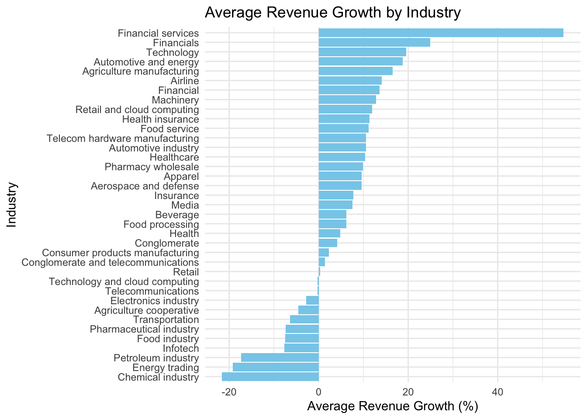

# Load libraries
library(tidyverse)
Global companies vary widely in revenue and growth trajectories, raising the question of what factors drive revenue growth in the business world. In this post, I analyze the Top Companies Dataset to explore whether the number of employees and industry type influence revenue growth using a regression model and data visualization.
The dataset includes key characteristics of the world’s largest companies, including their revenue, revenue growth, employee count, and industry type. This analysis focuses on understanding how company size (employees) and industry impact revenue growth.
Data Preparation
To begin, I loaded and cleaned the dataset for analysis.
# Read the dataset
companies <- read_csv("companies.csv")# Data cleaning and transformations
companies <- companies %>%
mutate(
revenue_usd_millions = parse_number(as.character(`Revenue (USD millions)`)),
revenue_growth = parse_number(as.character(`Revenue growth`)),
employees = parse_number(as.character(Employees))
)Regression Analysis
# Fit a multiple regression model
revenue_growth_model <- lm(revenue_growth ~ employees + Industry, data = companies)# Display the summary of the regression model
summary(revenue_growth_model)
Call:
lm(formula = revenue_growth ~ employees + Industry, data = companies)
Residuals:
Min 1Q Median 3Q Max
-34.685 -3.026 0.000 3.706 106.840
Coefficients:
Estimate Std. Error t value
(Intercept) 8.522e+00 1.447e+01 0.589
employees 7.360e-06 1.105e-05 0.666
IndustryAgriculture cooperative -1.320e+01 2.494e+01 -0.529
IndustryAgriculture manufacturing 7.368e+00 2.491e+01 0.296
IndustryAirline 4.681e+00 1.856e+01 0.252
IndustryApparel 4.622e-01 2.491e+01 0.019
IndustryAutomotive and energy 9.244e+00 2.490e+01 0.371
IndustryAutomotive industry 7.770e-01 2.033e+01 0.038
IndustryBeverage -3.833e+00 2.034e+01 -0.188
IndustryChemical industry -3.039e+01 2.493e+01 -1.219
IndustryConglomerate -6.155e+00 1.858e+01 -0.331
IndustryConglomerate and telecommunications -8.229e+00 2.490e+01 -0.331
IndustryConsumer products manufacturing -7.009e+00 2.490e+01 -0.281
IndustryElectronics industry -1.251e+01 2.490e+01 -0.502
IndustryEnergy trading -2.776e+01 2.495e+01 -1.113
IndustryFinancial 4.715e+00 2.036e+01 0.232
IndustryFinancial services 4.390e+01 2.496e+01 1.758
IndustryFinancials 1.577e+01 1.546e+01 1.020
IndustryFood industry -1.632e+01 2.493e+01 -0.655
IndustryFood processing -3.011e+00 2.034e+01 -0.148
IndustryFood service 2.150e+00 2.491e+01 0.086
IndustryHealth -4.075e+00 2.492e+01 -0.164
IndustryHealth insurance 2.317e+00 2.035e+01 0.114
IndustryHealthcare 4.084e-01 1.661e+01 0.025
IndustryInfotech -1.643e+01 2.493e+01 -0.659
IndustryInsurance -1.076e+00 1.705e+01 -0.063
IndustryMachinery 3.445e+00 2.490e+01 0.138
IndustryMedia -2.487e+00 2.491e+01 -0.100
IndustryPetroleum industry -2.602e+01 1.595e+01 -1.631
IndustryPharmaceutical industry -1.666e+01 1.660e+01 -1.003
IndustryPharmacy wholesale 1.054e+00 2.492e+01 0.042
IndustryRetail -1.174e+01 1.617e+01 -0.726
IndustryRetail and cloud computing -7.846e+00 2.919e+01 -0.269
IndustryTechnology 1.032e+01 1.661e+01 0.621
IndustryTechnology and cloud computing -1.047e+01 1.858e+01 -0.564
IndustryTelecom hardware manufacturing 1.453e+00 2.491e+01 0.058
IndustryTelecommunications -9.785e+00 1.856e+01 -0.527
IndustryTransportation -1.802e+01 2.054e+01 -0.877
Pr(>|t|)
(Intercept) 0.5579
employees 0.5079
IndustryAgriculture cooperative 0.5986
IndustryAgriculture manufacturing 0.7684
IndustryAirline 0.8017
IndustryApparel 0.9853
IndustryAutomotive and energy 0.7117
IndustryAutomotive industry 0.9696
IndustryBeverage 0.8511
IndustryChemical industry 0.2275
IndustryConglomerate 0.7416
IndustryConglomerate and telecommunications 0.7421
IndustryConsumer products manufacturing 0.7793
IndustryElectronics industry 0.6172
IndustryEnergy trading 0.2701
IndustryFinancial 0.8176
IndustryFinancial services 0.0836 .
IndustryFinancials 0.3118
IndustryFood industry 0.5150
IndustryFood processing 0.8828
IndustryFood service 0.9315
IndustryHealth 0.8706
IndustryHealth insurance 0.9097
IndustryHealthcare 0.9805
IndustryInfotech 0.5124
IndustryInsurance 0.9499
IndustryMachinery 0.8904
IndustryMedia 0.9208
IndustryPetroleum industry 0.1080
IndustryPharmaceutical industry 0.3196
IndustryPharmacy wholesale 0.9664
IndustryRetail 0.4705
IndustryRetail and cloud computing 0.7890
IndustryTechnology 0.5366
IndustryTechnology and cloud computing 0.5751
IndustryTelecom hardware manufacturing 0.9537
IndustryTelecommunications 0.5999
IndustryTransportation 0.3837
---
Signif. codes: 0 '***' 0.001 '**' 0.01 '*' 0.05 '.' 0.1 ' ' 1
Residual standard error: 20.33 on 62 degrees of freedom
Multiple R-squared: 0.4144, Adjusted R-squared: 0.06488
F-statistic: 1.186 on 37 and 62 DF, p-value: 0.2725Based on the multiple regression analysis, the model explores the impact of the number of employees and industry type on revenue growth. The results indicate that neither employees nor most industry types have statistically significant effects on revenue growth, as their p-values are generally greater than 0.05. The overall model explains about 41% of the variability in revenue growth (Multiple R-squared = 0.4144), but the adjusted R-squared (0.06488) suggests that the model’s explanatory power diminishes when accounting for the number of predictors. This indicates that other factors may play a more substantial role in driving revenue growth among companies.
Data Visualisation
I’ll use a bar plot to compare average revenue growth across different industries, highlighting which sectors experience the fastest growth.
# Create a bar plot of average revenue growth by industry
avg_growth_by_industry <- companies %>%
group_by(Industry) %>%
summarize(avg_growth = mean(revenue_growth, na.rm = TRUE))
ggplot(avg_growth_by_industry, aes(x = reorder(Industry, avg_growth), y = avg_growth)) +
geom_bar(stat = "identity", fill = "skyblue") +
coord_flip() +
labs(
title = "Average Revenue Growth by Industry",
x = "Industry",
y = "Average Revenue Growth (%)"
) +
theme_minimal()
This graph shows the average revenue growth by industry, providing valuable insights into how different sectors perform financially. Industries such as Financial Services, Financials, and Technology demonstrate the highest average revenue growth rates, indicating strong expansion and market potential. Conversely, industries like Chemical Industry, Energy Trading, and Petroleum Industry show negative average revenue growth, highlighting potential challenges or downturns in these sectors. This visualization underscores the variability in revenue growth across industries, reflecting the influence of market trends, demand, and economic conditions on sector performance.
Conclusion
In this analysis, we explored the factors influencing revenue growth among the world’s top companies. A regression model revealed that neither the number of employees nor most industries had a statistically significant impact on growth, suggesting other factors may play a more substantial role. However, a closer look at industries highlighted significant variability, with Financial Services and Technology leading in average revenue growth, while sectors like Chemical Industry and Petroleum Industry faced declines. These findings emphasize the complexity of revenue growth dynamics, driven by a combination of sector-specific trends and broader economic forces. Future analyses could integrate additional variables, such as regional factors or market share, to deepen insights into company performance.